TL;DR: We present MotionRFT, a reinforcement fine-tuning framework with a unified multi-representation reward model MotionReward and a step-wise, memory-efficient fine-tuning strategy EasyTune. It achieves FID 0.132 with only 22.10 GB memory, generalizing across six base models and three motion representations.
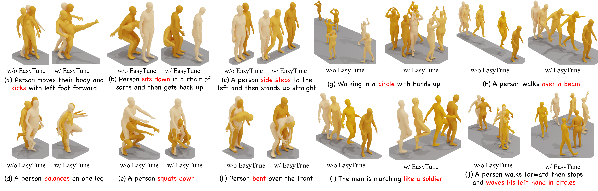
Visual results on HumanML3D. "w/o" = original base model; "w/" = after fine-tuning with EasyTune.
Text-to-motion generation has rapidly advanced with diffusion- and flow-based generative models, yet supervised pre-training remains insufficient to align models with high-level objectives such as semantic consistency, realism, and human preference. However, existing post-training methods have key limitations: they (1) are often designed for a specific motion representation, such as joint- or rotation-based motions, (2) typically optimize a particular aspect, such as text-motion alignment or human preference, and may compromise other quality factors; and (3) incur substantial computational overhead, data dependence, and coarse-grained optimization. We present a reinforcement fine-tuning framework that comprises a heterogeneous-representation, multi-dimensional reward model MotionReward and an efficient, fine-grained fine-tuning strategy EasyTune. To obtain a unified semantics representation, MotionReward maps heterogeneous motion representations into a shared semantic embedding space, where the text description serves as an anchor, paving the way for multi-dimensional reward learning. To enhance semantic without additional annotated data, we propose Self-refinement Preference Learning dynamically mining the preference and refinement itself. For efficient and effective fine-tuning, we identify a key limitation of differentiable-reward methods, the recursive dependence across denoising steps. Motivated by this insight, we propose EasyTune, which fine-tunes diffusion step-wise rather than over the full trajectory, decoupling this dependence and enabling dense, fine-grained, and memory-efficient optimization. Extensive experiments demonstrate strong cross-model and cross-representation generalization, achieving FID 0.132 with 22.10 GB peak memory and saving up to 15.22 GB over DRaFT. Beyond kinematic-based MLD and MDM, it reduces FID by 22.9% on joint-based ACMDM, and achieves a 12.6% R-Precision gain and 23.3% FID improvement on rotation-based HY Motion.
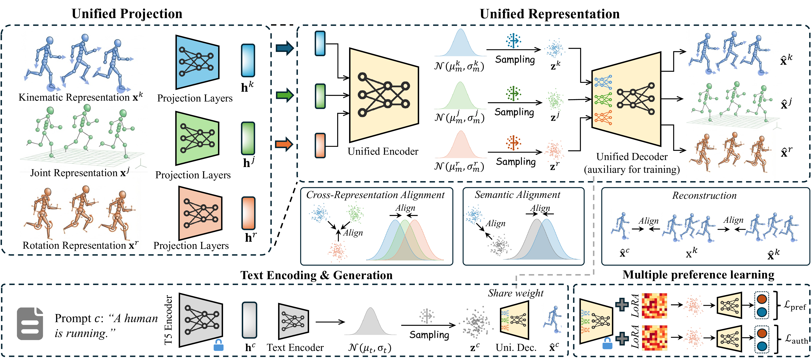
Overview of MotionReward. It maps heterogeneous motion representations into a shared semantic embedding space, where text serves as an anchor for multi-dimensional reward learning.
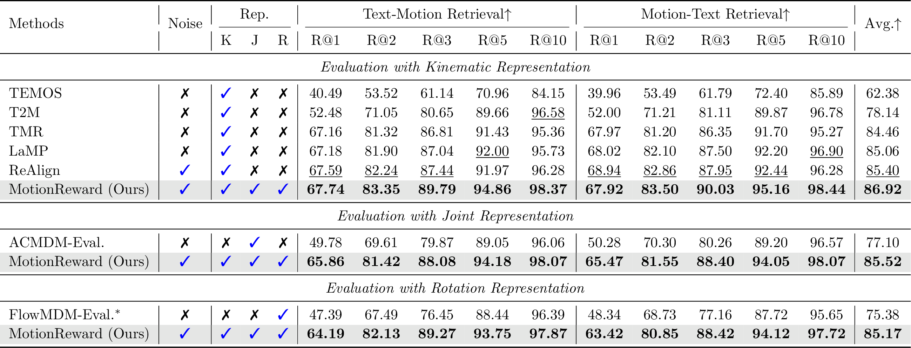
Evaluation on text-motion retrieval across kinematic, joint, and rotation representations.
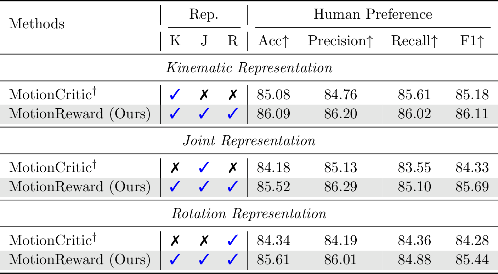
Evaluation on human preference prediction.
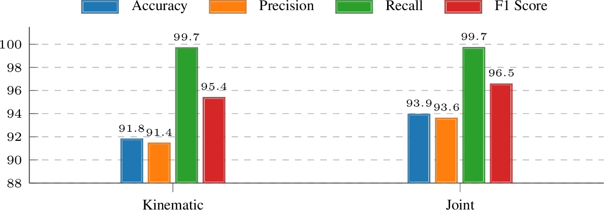
Evaluation on motion authenticity.
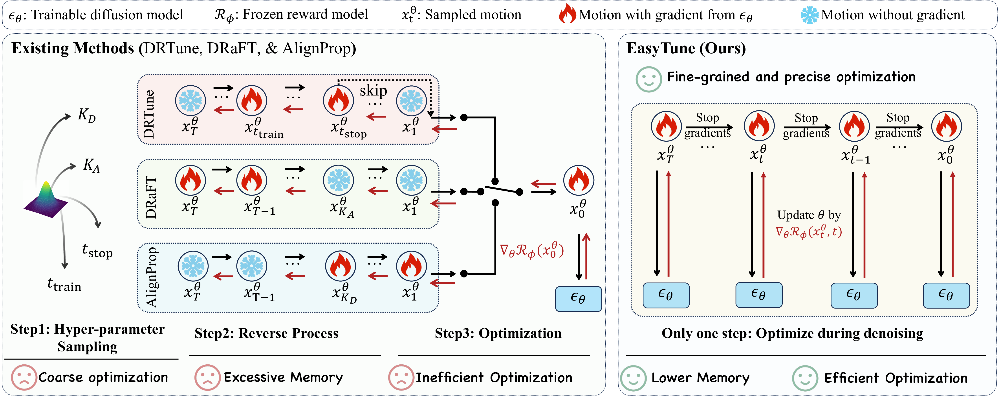
Existing methods (left) backpropagate through the entire denoising trajectory. EasyTune (right) fine-tunes step-wise, decoupling the recursive dependence.
We identify a key limitation of differentiable-reward methods: the recursive dependence across denoising steps leads to inefficient optimization and high memory consumption. EasyTune fine-tunes step-wise rather than over the full trajectory, decoupling this dependence and enabling:
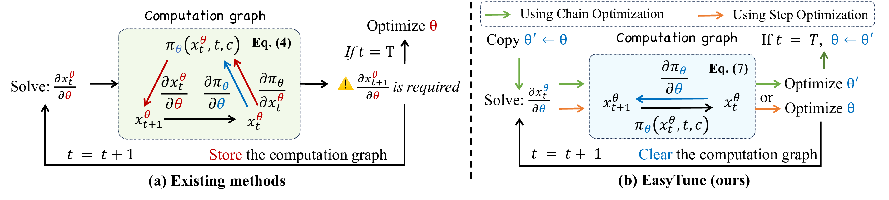
Core insight: decoupling the recursive dependence of the computation graph.
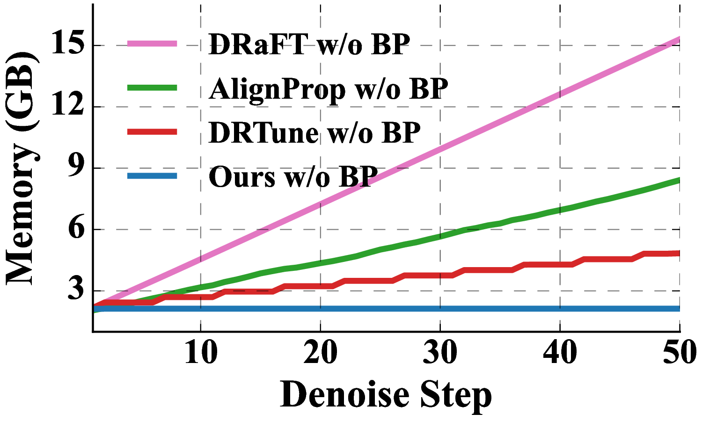
Memory complexity: O(T) vs. O(1).
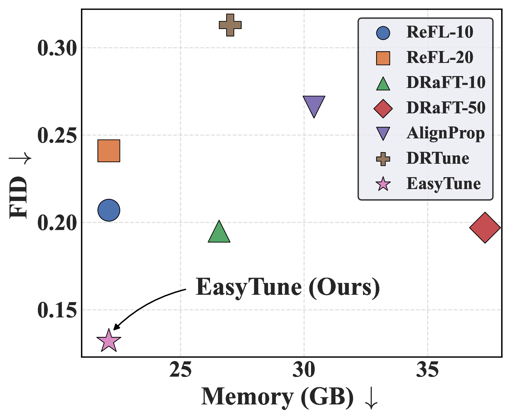
Training cost comparison of different fine-tuning methods.
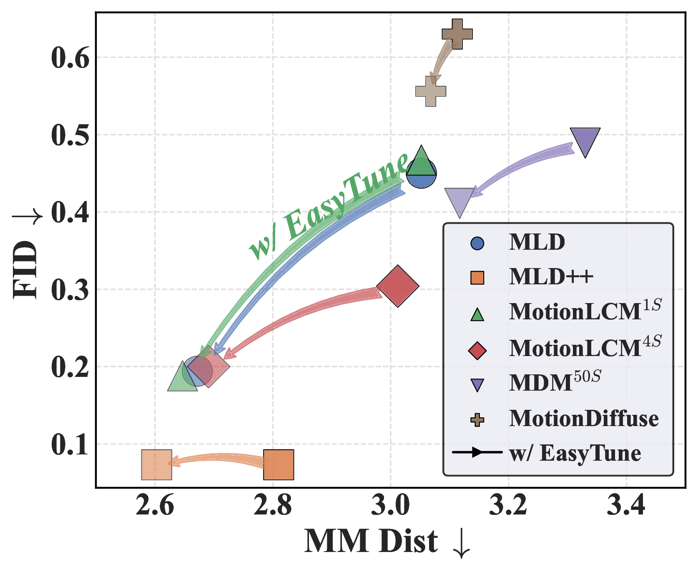
Generalization across six pre-trained diffusion-based models.
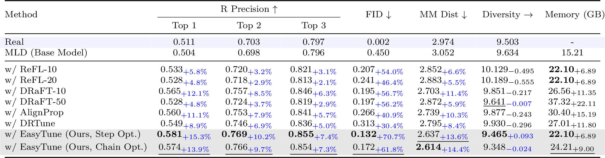
Comparison of fine-tuning methods on HumanML3D. EasyTune achieves FID 0.132 (70.7% improvement) with 22.10 GB peak memory, saving up to 15.22 GB over DRaFT.
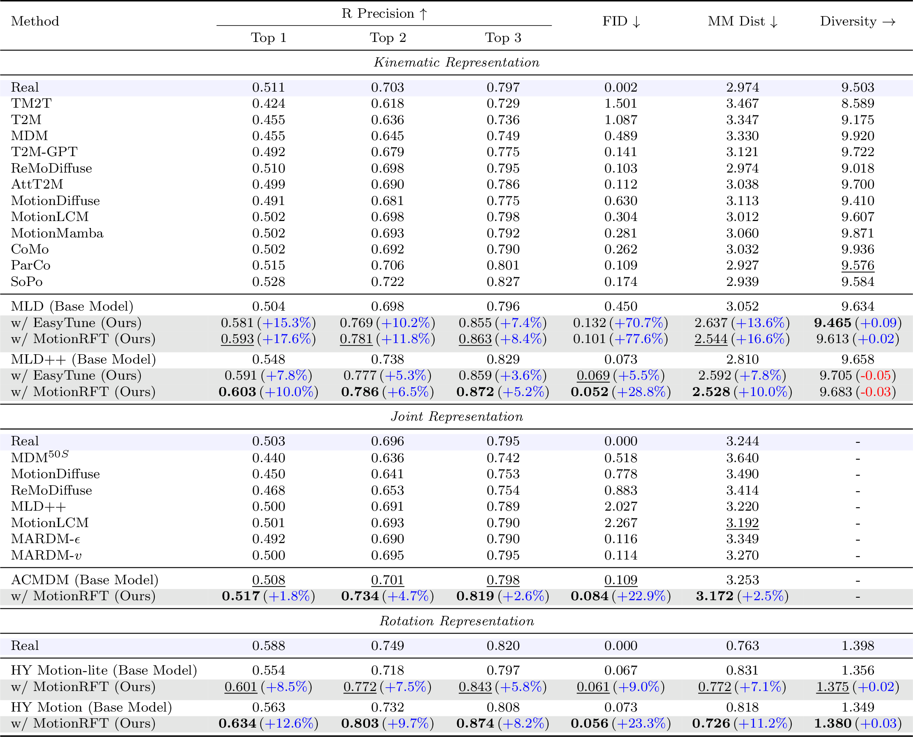
Text-to-motion generation on HumanML3D across three representations. MotionRFT achieves best FID of 0.052 (MLD++) and 0.056 (HY Motion).
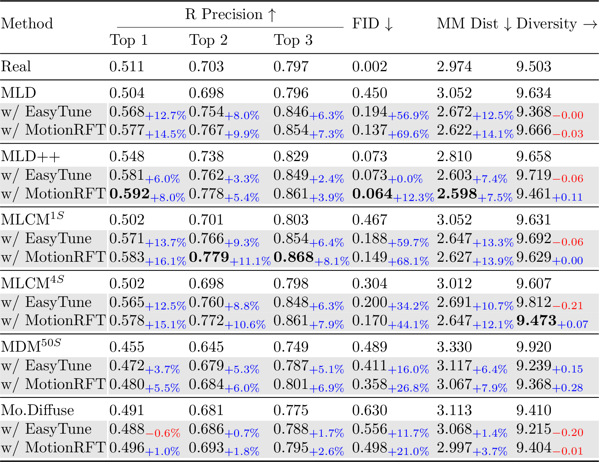
Performance enhancement across six diffusion-based motion generation models with both EasyTune and MotionRFT.
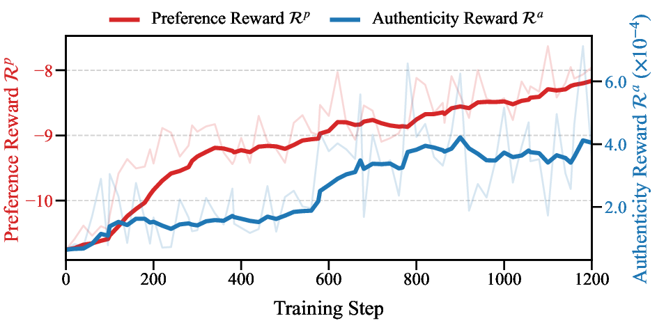
Authenticity and preference reward curves during MotionRFT training.
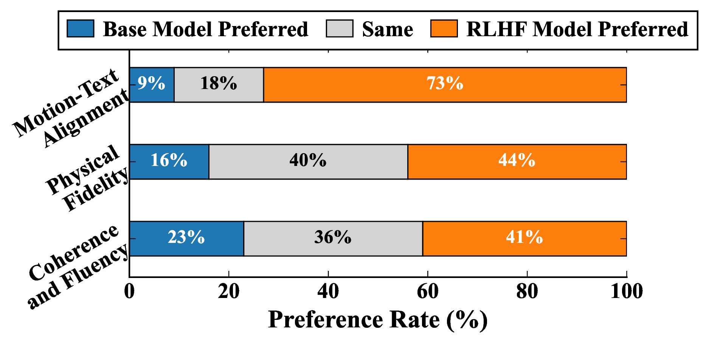
User study results on MLD.
Reward hacking occurs when models over-fit to semantic alignment while neglecting realistic motion dynamics. This can be effectively mitigated with KL-divergence regularization.
Generated motion sequences comparing original vs. fine-tuned models.
@article{tan2026motionrft,
title={MotionRFT: Unified Reinforcement Fine-Tuning for Text-to-Motion Generation},
author={Tan, Xiaofeng and Weng, Wanjiang and Wang, Hongsong and Zhao, Fang and Geng, Xin and Wang, Liang},
journal={},
year={2026}
}
@inproceedings{tan2026easytune,
title={EasyTune: Efficient Step-Aware Fine-Tuning for Diffusion-Based Motion Generation},
author={Tan, Xiaofeng and Weng, Wanjiang and Lei, Haodong and Wang, Hongsong},
booktitle={International Conference on Learning Representations (ICLR)},
year={2026}
}